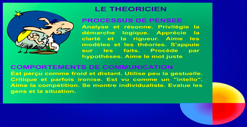
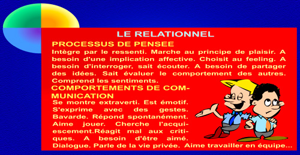
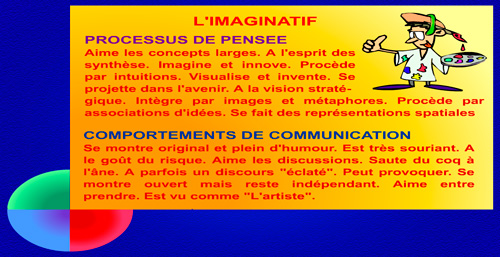
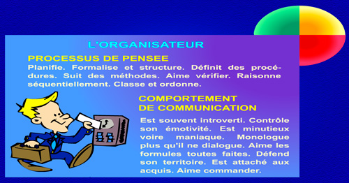

Préférences Hémisphériques
Selon le modèle de Ned Herrmann, ma couleur de dominance est verte, l'hémisphère limbique gauche. Je suis une personne qui aime l’organisation, la planification et une séquence pour suivre, un plan bien détaillés. Par contre, je n’aime pas vraiment la routine, la même façon de faire. Et puis, le mode d’utilisation est distribuée parmi les autres trois quadrants. En effet, je possède des petites doses d’intérêts pour les autres parties du cérvo. Émotive et affective du mode limbique droit, la logique du cortical gauche et les stratégies de la côté cortex droit.
De la côté professionnelle, je suis toujours organisée et relationnelle, je privilégie l’écoute et le dialogue, j’ai besoin de partager mes idées. J’apprécie le travail en équipe, la ponctualité, la méthodique qui rends l’ambiance de travail plus securité, mais, aussi, un peu d’innovation. Par contre, je n’aime pas prendre des grands risques et je ne suis pas à l’aise à la competition et me fait mal affronter la pression, mais je peux la gérer quand même.
|  |  |
|  |  |